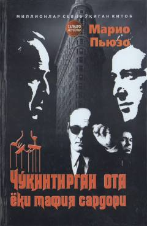

COAmerikalik va sitsiliyalik mafiya olamining yashirin sirlari haqidagi mashhur roman.
Ushbu roman amerikalik va sitsiliyalik mafiya guruhlarining yashirin faoliyati, ularning siyosiy doiralar va qonun ҳimoyachilari bilan aloqalarini ochib beruvchi jahonga mashhur asardir. Muallif asar davomida jinoiy olam qonunlari va shaxsiy manfaatlar o'rtasidagi ziddiyatlarni yorqin tasvirlagan. Kitob millionlab kitobxonlar e'tiboriga sazovor bo'lib, ekranlashtirilgan klassik asarlar qatoriga kiradi.